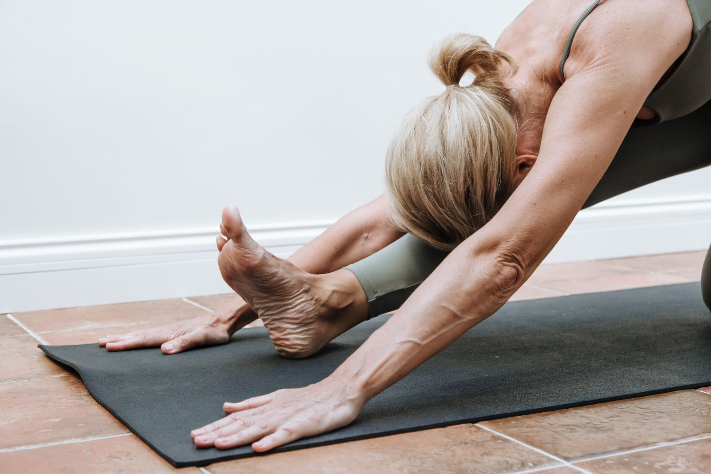

Milyen legyen az első benyomás?
Három különböző megközelítés ugyanahhoz a stúdióhoz. Nyisd meg az oldalakat, görgess végig rajtuk, és figyeld meg, melyik hangulat áll hozzád a legközelebb.
tartásgyógytorna stúdióDebrecen
Mozdulj a saját tempódban.

Egyéni figyelemSzabadabb mindennapok
1. koncepció
Szabad mozdulat
Nyugodt, természetes, személyes.
Lora + Manrope
Megnézem a koncepciót tartásgyógytorna stúdióDebrecen
Az első lépés: megérteni.

Egyéni figyelemSzabadabb mindennapok
2. koncepció
Érthető lépések
Áttekinthető, határozott, bizalomépítő.
Sora + Source Sans 3
Megnézem a koncepciót tartásgyógytorna stúdióDebrecen
Legyen helye a mozgásnak.

Egyéni figyelemSzabadabb mindennapok
3. koncepció
Hely a mozgásnak
Levegős, finom, emberközeli.
Bodoni Moda + Nunito Sans
Megnézem a koncepciót